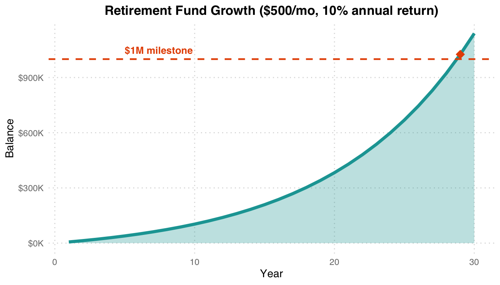
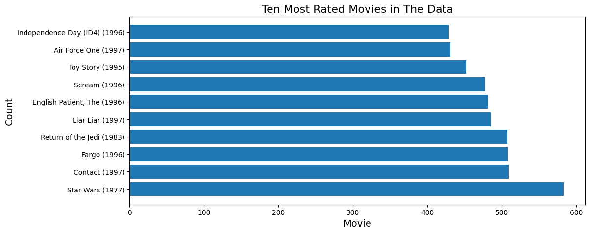
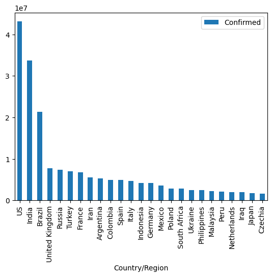
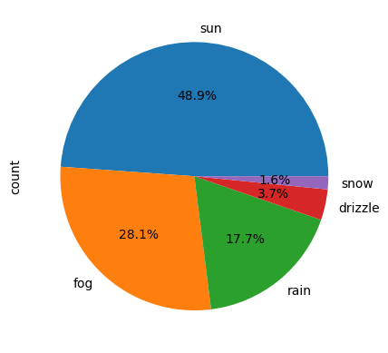
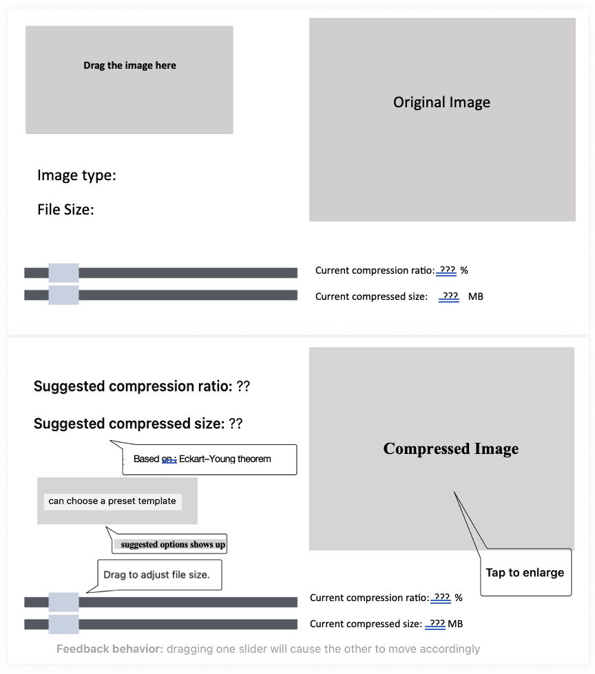
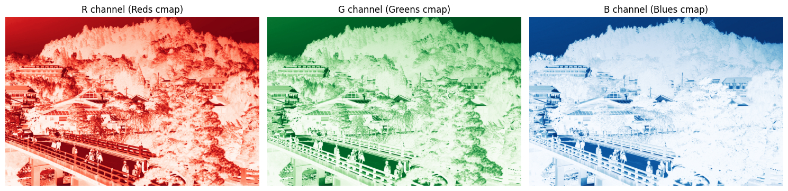
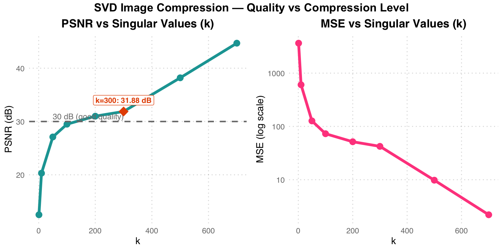
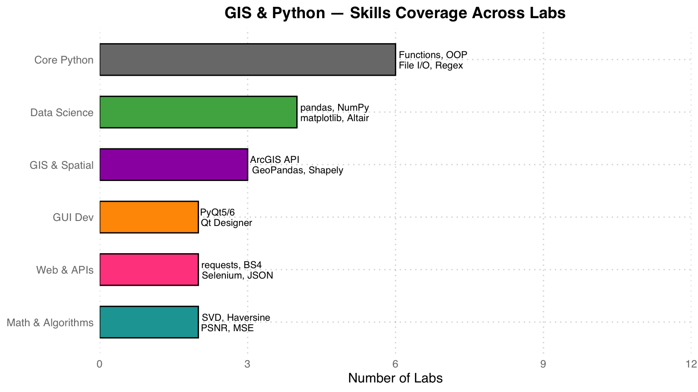

%%{init: {"theme": "base", "themeVariables": {"fontSize": "18px"}, "flowchart": {"padding": 35}}}%%
flowchart LR
A["User Input "] --> B["Monthly Contribution "] --> C["Compound Interest "] --> D["Year-by-Year Projection "] --> E["Millionaire Calculator "]
style A fill:#E3F2FD,color:#1565C0,stroke:#90CAF9,stroke-width:2px
style B fill:#F5F5F5,color:#424242,stroke:#BDBDBD,stroke-width:2px
style C fill:#FFF3E0,color:#E65100,stroke:#FFCC80,stroke-width:2px
style D fill:#E8F5E9,color:#2E7D32,stroke:#A5D6A7,stroke-width:2px
style E fill:#E8F5E9,color:#2E7D32,stroke:#A5D6A7,stroke-width:2px
GIS & Python Programming
Assignments / 作業
Lab 2 — Retirement Calculator / 退休基金計算器
Topic / 主題： Financial planning with compound interest calculations 以複利計算為基礎的退休基金規劃工具。
Key Concepts / 核心概念： Functions, loops, formatted output, compound interest
功能說明： 三種模式 — (1) 逐年基金預測（月複利），(2) 百萬富翁計算器（多少年達到 $1M），(3) 利率比較表（1-30% 年利率）。例：$500/月、10% 年利率、30 年 → $1.14M。
# Year-by-year retirement fund projection
def calculate_fund(monthly, rate, years):
balance = 0
monthly_rate = rate / 12
for year in range(1, years + 1):
for month in range(12):
balance += monthly
balance *= (1 + monthly_rate)
print(f"Year {year:3d}: ${balance:>12,.2f}")
return balance
# Millionaire Calculator
def years_to_million(monthly, rate):
balance, months = 0, 0
monthly_rate = rate / 12
while balance < 1_000_000:
balance += monthly
balance *= (1 + monthly_rate)
months += 1
return months // 12, months % 12
複利效果： 前 15 年成長緩慢，後 15 年指數加速。$500/月在 10% 年利率下約 21 年達到百萬美元（橘色菱形）。複利是長期投資的核心驅動力。
Lab 3 — Gradebook Manager / 成績管理系統
Topic / 主題： Interactive student grade management with CRUD operations 互動式學生成績管理系統，支援新增、刪除、修改、查詢。
Key Concepts / 核心概念： Lists, nested data structures, menu-driven programming, input validation
# Menu-driven gradebook
def main_menu():
while True:
print("\n1. Add student")
print("2. Remove student")
print("3. Modify grade")
print("4. Display gradebook")
print("5. Find highest/lowest")
print("6. Exit")
choice = input("Select: ")
# ... handle each option設計重點： 使用巢狀 list 儲存學生資料 [name, grade]，搭配 while loop 實現持續互動選單。包含輸入驗證（成績範圍 0-100）與錯誤處理。
Lab 4 — Modules, Functions & OOP / 模組化程式設計與 OOP
Topic / 主題： Modular programming, reusable modules, and object-oriented design 模組化程式設計、可重用模組與物件導向設計。
Key Concepts / 核心概念： Module imports, OOP (classes), CSV I/O, distance calculations
%%{init: {"theme": "base", "themeVariables": {"fontSize": "18px"}, "flowchart": {"padding": 35}}}%%
flowchart TD
A["Lab 4 Modules "] --> B["(a) CSV Field Counter "]
A --> C["(b) Parcel Tax Calculator "]
A --> D["(c) Distance Calculator "]
B --> B1["mycount.py + callingscript.py "]
C --> C1["parcelclass.py → OOP "]
D --> D1["Euclidean + Great Circle "]
style A fill:#E3F2FD,color:#1565C0,stroke:#90CAF9,stroke-width:2px
style B fill:#FFF3E0,color:#E65100,stroke:#FFCC80,stroke-width:2px
style C fill:#E8F5E9,color:#2E7D32,stroke:#A5D6A7,stroke-width:2px
style D fill:#F3E5F5,color:#6A1B9A,stroke:#CE93D8,stroke-width:2px
style B1 fill:#F5F5F5,color:#424242,stroke:#BDBDBD,stroke-width:2px
style C1 fill:#F5F5F5,color:#424242,stroke:#BDBDBD,stroke-width:2px
style D1 fill:#F5F5F5,color:#424242,stroke:#BDBDBD,stroke-width:2px
# (b) Parcel class with tax assessment
class Parcel:
def __init__(self, parcel_id, land_use, market_value):
self.parcel_id = parcel_id
self.land_use = land_use
self.market_value = market_value
def assess_tax(self):
rates = {"SFR": 0.05, "MFR": 0.04}
rate = rates.get(self.land_use, 0.02)
return self.market_value * rate
# (c) Great Circle Distance (Haversine formula)
import math
def great_circle(lat1, lon1, lat2, lon2):
R = 6371 # Earth radius in km
dlat = math.radians(lat2 - lat1)
dlon = math.radians(lon2 - lon1)
a = (math.sin(dlat/2)**2 +
math.cos(math.radians(lat1)) *
math.cos(math.radians(lat2)) *
math.sin(dlon/2)**2)
return R * 2 * math.asin(math.sqrt(a))三個子任務： (a) 計算 CSV 各欄位空值數量，(b) 以 OOP 建立 Parcel 類別計算不動產稅（SFR 5%、MFR 4%、其他 2%），(c) 以 Haversine 公式計算地球表面兩點距離。
Lab 5 — Pandas Data Analysis / Pandas 資料分析
Topic / 主題： DataFrame manipulation, grouping, pivoting, and multi-dataset merging Pandas DataFrame 操作、分組、樞紐分析與多資料集合併。
Datasets / 資料集： MovieLens (100K ratings), COVID-19 global time series
Key Concepts / 核心概念： pandas Series/DataFrame, boolean indexing, GroupBy, pivot tables, merge/join
# COVID-19 fatality rate analysis
fatality = (deaths_total / confirmed_total * 100).sort_values(ascending=False)
# Peru: 9.17%, Mexico: 7.58%, South Africa: 2.68%
# MovieLens: most rated movies
top_movies = ratings.groupby('movieId').size().sort_values(ascending=False).head(10)
# Multi-DataFrame merge
merged = pd.merge(users, ratings, on='userId')
merged = pd.merge(merged, movies, on='movieId')分析重點： (1) MovieLens — 找出評分最多的電影、男女評分差異最大的電影，(2) COVID-19 — 確診數前 25 國、各國致死率排名（秘魯 9.17% 最高）、月度增量分析（美國 2021 年 9 月增 +430 萬例）。
Lab 6 — Data Visualization / 資料視覺化
Topic / 主題： Publication-quality charts with matplotlib and Altair 使用 matplotlib 與 Altair 製作出版品質的圖表與互動式視覺化。
Datasets / 資料集： MovieLens, COVID-19, Seattle weather (Vega)




視覺化技巧： 水平長條圖比較電影評論數量、散點圖呈現男女評分差異、圓餅圖展示天氣類型分布、折線圖追蹤 COVID-19 趨勢。Altair 部分製作了互動式 linked chart（點選國家 → 顯示該國死亡趨勢）。
Lab 7 — GUI Development with PyQt5 / PyQt5 桌面應用程式
Topic / 主題： Desktop application: Number guessing game with graphical interface 使用 PyQt5 開發數字猜謎遊戲桌面應用程式。
Key Concepts / 核心概念： PyQt5 widgets, event-driven programming, signal/slot, Qt Designer
%%{init: {"theme": "base", "themeVariables": {"fontSize": "18px"}, "flowchart": {"padding": 35}}}%%
flowchart LR
A["Qt Designer "] --> B["frmGuess.py "] --> C["lab7.py "] --> D["Number Game GUI "]
style A fill:#F5F5F5,color:#424242,stroke:#BDBDBD,stroke-width:2px
style B fill:#E3F2FD,color:#1565C0,stroke:#90CAF9,stroke-width:2px
style C fill:#FFF3E0,color:#E65100,stroke:#FFCC80,stroke-width:2px
style D fill:#E8F5E9,color:#2E7D32,stroke:#A5D6A7,stroke-width:2px
# Number guessing game with hint system
class GuessGame:
def __init__(self):
self.target = random.randint(1, 100)
self.guesses = 0
def make_guess(self, n):
self.guesses += 1
if n == self.target:
return "Correct!"
return "Higher!" if n < self.target else "Lower!"
def use_hint(self):
"""Costs 5 guesses, reveals number within ±5"""
self.guesses += 5
return (self.target - 5, self.target + 5)GUI 功能： 隨機數字 (1-100) 猜謎遊戲。包含 (1) 猜測追蹤，(2) 提示系統（消耗 5 次機會，縮小範圍到 ±5），(3) 勝利偵測與重設。使用 Qt Designer 設計介面，frmGuess.py 為自動生成的 UI 程式碼。
Lab 8 — ArcGIS API for Python / ArcGIS Python API
Topic / 主題： Programmatic map creation and spatial data querying with ArcGIS Online 使用 ArcGIS API 程式化建立地圖與查詢空間資料。
Key Concepts / 核心概念： ArcGIS authentication, WebMap, FeatureLayer queries, basemap cycling
from arcgis.gis import GIS
from arcgis.mapping import WebMap
gis = GIS("https://www.arcgis.com", username, password)
m = gis.map("University of Texas at Dallas", zoomlevel=15)
# Search and add feature layers
items = gis.content.search("UTD Buildings", item_type="Feature Layer")
m.add_layer(items[0])
# Query building attributes
fl = items[0].layers[0]
fl.properties.fields # Inspect field schemaGIS 操作： 透過 Python API 連接 ArcGIS Online，以 UTD 校園為中心建立互動式地圖，搜尋並疊加建築物圖層，查詢屬性欄位結構，切換不同底圖樣式。
Lab 10 — Web Scraping & APIs / 網頁爬蟲與 API
Topic / 主題： Data extraction from web sources using APIs and scraping tools 使用 API 與爬蟲工具從網頁來源擷取資料。
Key Concepts / 核心概念： requests, JSON parsing, BeautifulSoup (HTML), Selenium (dynamic content)
%%{init: {"theme": "base", "themeVariables": {"fontSize": "18px"}, "flowchart": {"padding": 35}}}%%
flowchart LR
A["requests GET "] --> B["JSON / HTML "]
B --> C["BeautifulSoup "]
B --> D["json.loads() "]
C --> E["Structured Data "]
D --> E
style A fill:#E3F2FD,color:#1565C0,stroke:#90CAF9,stroke-width:2px
style B fill:#F5F5F5,color:#424242,stroke:#BDBDBD,stroke-width:2px
style C fill:#FFF3E0,color:#E65100,stroke:#FFCC80,stroke-width:2px
style D fill:#E8F5E9,color:#2E7D32,stroke:#A5D6A7,stroke-width:2px
style E fill:#E8F5E9,color:#2E7D32,stroke:#A5D6A7,stroke-width:2px
import requests
from bs4 import BeautifulSoup
# RESTful API request
response = requests.get("https://api.example.com/data")
data = response.json()
# HTML scraping
page = requests.get("https://example.com")
soup = BeautifulSoup(page.content, "html.parser")
elements = soup.find_all("div", class_="target")兩種方法： (1) RESTful API — 發送 GET/POST 請求，解析 JSON 回應，(2) HTML 爬蟲 — 使用 BeautifulSoup 解析 DOM 結構，Selenium 處理動態載入內容。
Lab 11 — Regular Expressions & GeoPandas / 正規表達式與地理空間視覺化
Topic / 主題： Parse structured text files with regex, create spatial visualizations with GeoPandas 使用正規表達式解析結構化文字，搭配 GeoPandas 製作地理空間視覺化。
Dataset / 資料集： worldcities.txt — city coordinates in degrees-minutes format
import re
import geopandas as gpd
from shapely.geometry import Point
# Parse DMS coordinates with regex
pattern = r"^(.*)\t(\d+)\t(\d+) ([NS])\t(\d+)\t(\d+) ([EW])\t(.*)$"
for line in open("worldcities.txt"):
match = re.match(pattern, line.strip())
if match:
city, lat_d, lat_m, ns, lon_d, lon_m, ew, country = match.groups()
lat = (int(lat_d) + int(lat_m)/60) * (-1 if ns == 'S' else 1)
lon = (int(lon_d) + int(lon_m)/60) * (-1 if ew == 'W' else 1)
處理流程： Regex 從 worldcities.txt 擷取城市名、經緯度（度分格式）與國家 → 轉換 DMS 為十進位度數 → 建立 Shapely Point 幾何 → GeoPandas GeoDataFrame → 疊加 Natural Earth 底圖繪製全球城市分布圖。
Midterm / 期中考
Midterm Project — Data Analysis Suite / 資料分析組合
三個獨立的 Python 程式，展示檔案操作、資料分析與不動產查詢能力。
%%{init: {"theme": "base", "themeVariables": {"fontSize": "18px"}, "flowchart": {"padding": 35}}}%%
flowchart TD
A["Midterm Project "] --> B["Alumni Research "]
A --> C["File Manipulation "]
A --> D["Real Estate Search "]
B --> B1["Income & Debt by Major "]
C --> C1["Recursive CSV Processing "]
D --> D1["Multi-criteria Property Filter "]
style A fill:#E3F2FD,color:#1565C0,stroke:#90CAF9,stroke-width:2px
style B fill:#FFF3E0,color:#E65100,stroke:#FFCC80,stroke-width:2px
style C fill:#E8F5E9,color:#2E7D32,stroke:#A5D6A7,stroke-width:2px
style D fill:#F3E5F5,color:#6A1B9A,stroke:#CE93D8,stroke-width:2px
style B1 fill:#F5F5F5,color:#424242,stroke:#BDBDBD,stroke-width:2px
style C1 fill:#F5F5F5,color:#424242,stroke:#BDBDBD,stroke-width:2px
style D1 fill:#F5F5F5,color:#424242,stroke:#BDBDBD,stroke-width:2px
1. Alumni Research / 校友研究
分析校友收入與學貸：按科系統計平均年齡、性別比例、收入排名、學貸還款計算器（以年收入 5% 為月還款）。
# Loan payoff calculator: 5% annual income as monthly payment
def loan_payoff(debt, annual_income, interest_rate=0.05):
monthly_payment = annual_income * 0.05 / 12
balance, months = debt, 0
while balance > 0:
balance *= (1 + interest_rate / 12)
balance -= monthly_payment
months += 1
return months // 12, months % 122. File Manipulation / 檔案操作
遞迴走訪目錄，偵測 CSV 檔案並以 tab 分隔格式美化輸出。
import os
def process_directory(path):
if os.path.isfile(path) and path.endswith('.csv'):
pretty_print_csv(path)
elif os.path.isdir(path):
for root, dirs, files in os.walk(path):
for f in files:
if f.endswith('.csv'):
pretty_print_csv(os.path.join(root, f))3. Real Estate Search / 不動產搜尋
多條件過濾地產：州別代碼、最小居住面積、市價範圍、指定學區。
期中總結： 三個程式分別展示 (1) pandas 資料分析與合併（merge on ID），(2) os.walk() 遞迴檔案處理，(3) 多條件邏輯篩選。涵蓋資料科學、系統操作與實務應用三大面向。
Final Project / 期末專案
SVD Image Compression Application / SVD 影像壓縮應用程式
Task / 任務： Build an interactive desktop application for image compression using Singular Value Decomposition (SVD), with real-time preview and quality metrics. 建立互動式桌面應用程式，使用奇異值分解 (SVD) 進行影像壓縮，具備即時預覽與品質指標。
Method / 方法： PyQt6 GUI + NumPy SVD + PIL image processing
Mathematical Foundation / 數學基礎： Eckart-Young Theorem — A_k = sum(sigma_i * u_i * v_i^T) for i=1 to k
Application Architecture / 應用程式架構
%%{init: {"theme": "base", "themeVariables": {"fontSize": "18px"}, "flowchart": {"padding": 35}}}%%
flowchart TD
A["Image Input (drag & drop) "] --> B["RGB Channel Split "]
B --> C["np.linalg.svd per channel "]
C --> D["Low-rank Approximation A_k "]
D --> E["Reconstruct RGB "]
E --> F["PSNR + File Size "]
F --> G["Preview & Export "]
style A fill:#E3F2FD,color:#1565C0,stroke:#90CAF9,stroke-width:2px
style B fill:#E3F2FD,color:#1565C0,stroke:#90CAF9,stroke-width:2px
style C fill:#FFF3E0,color:#E65100,stroke:#FFCC80,stroke-width:2px
style D fill:#FFF3E0,color:#E65100,stroke:#FFCC80,stroke-width:2px
style E fill:#E8F5E9,color:#2E7D32,stroke:#A5D6A7,stroke-width:2px
style F fill:#F3E5F5,color:#6A1B9A,stroke:#CE93D8,stroke-width:2px
style G fill:#E8F5E9,color:#2E7D32,stroke:#A5D6A7,stroke-width:2px
SVD 原理： 任何矩陣 A 可分解為 A = U Sigma V^T。取前 k 個奇異值重建 A_k，即為最佳 rank-k 近似（Eckart-Young 定理）。k 越小壓縮率越高，但品質越低。
Core Algorithm / 核心演算法
import numpy as np
from PIL import Image
def perform_svd(image_array):
"""SVD on each RGB channel separately"""
channels = {}
for i, name in enumerate(['R', 'G', 'B']):
U, S, Vt = np.linalg.svd(image_array[:, :, i], full_matrices=False)
channels[name] = (U, S, Vt)
return channels
def reconstruct(channels, k):
"""Low-rank approximation with k singular values"""
reconstructed = np.zeros_like(original)
for i, name in enumerate(['R', 'G', 'B']):
U, S, Vt = channels[name]
reconstructed[:, :, i] = np.clip(
U[:, :k] @ np.diag(S[:k]) @ Vt[:k, :], 0, 255
)
return reconstructed.astype(np.uint8)
def calculate_psnr(original, compressed):
mse = np.mean((original.astype(float) - compressed.astype(float)) ** 2)
return 10 * np.log10(255**2 / mse) if mse > 0 else float('inf')GUI Features / 介面功能
# PyQt6 GUI with dual slider control
class SVDCompressor(QMainWindow):
def __init__(self):
# Drag-and-drop image upload
# Dual slider: compression ratio ↔ target file size (linked)
# Smart presets:
# Social media: 2 MB, ~35 dB PSNR
# Email: 5 MB, ~40 dB PSNR
# High quality: 80% compression, ~45 dB PSNR
passApplication Demo / 應用程式展示

App 功能一覽：
- 拖曳上傳 — 將圖片拖移至介面即可載入
- 雙滑桿連動 — 壓縮比例 ↔︎ 目標檔案大小（拖動一條另一條自動調整）
- 智慧建議 — 三種預設模板：社群媒體 (2 MB)、郵件附件 (5 MB)、高品質存檔 (PSNR > 40 dB)
- 即時預覽 — 左右對比原圖 vs 壓縮後，下方顯示 PSNR / 檔案大小 / 壓縮比
- 品質警告 — PSNR 低於 40 dB 時自動彈出警告
- 基於 Eckart-Young 定理 — 理論保證最佳低秩近似
📎 Download： SVD_app.py (原始碼)
SVD Quality Analysis / SVD 品質分析


Warning in annotate("label", x = 300, y = 34, label = "k=300: 31.88 dB", :
Ignoring unknown parameters: `label.size`
品質分析： 左圖 — PSNR 隨 k 增加而提升，k=300 時達 31.88 dB（超過 30 dB 門檻，灰色虛線），k=700 時接近原圖品質 (44.70 dB)。右圖 — MSE 呈指數下降，k=300 後改善趨緩。實務結論： k=200~400 是壓縮率與品質的最佳平衡區間。
| k | PSNR (dB) | MSE | Compression Ratio |
|---|---|---|---|
| 1 | 12.50 | 3650 | 99.9% |
| 50 | 27.10 | 127 | 95.1% |
| 100 | 29.50 | 73 | 90.3% |
| 300 | 31.88 | 42.29 | 70.9% |
| 700 | 44.70 | 2.2 | 32.0% |
Eckart-Young 定理驗證： 實驗確認 ||A - A_k||₂ ≈ sigma_{k+1}，即低秩近似的誤差等於第 k+1 個奇異值。這為選擇最佳 k 值提供了理論依據 — 當 sigma_{k+1} 小於品質門檻時即可停止。
Course Skills Summary / 課程技能總覽

課程總結： 從基礎 Python（函式、OOP、檔案操作）到資料科學（pandas、視覺化）、GIS 空間分析（ArcGIS、GeoPandas）、GUI 開發（PyQt5/6）、網頁爬蟲（requests、BeautifulSoup），最終以 SVD 影像壓縮專案整合數學理論與軟體工程能力。